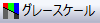
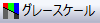

印刷プレビューではグレースケール  ボタンで色付きのグラフを白黒で表示することできます。.
グラフウィンドウの要素を非表示にするには、いくつかの方法があります。
要素がグラフウィンドウに表示されない場合、その要素は印刷物に表示されません。 印刷時にその構成要素を表示したい場合、ファイル：印刷を選択する前に表示させる必要があります。
グラフまたはレイアウトページを印刷する前に、ページ上のラベルやその他のオブジェクトの位置を確認する必要があります。 印刷ビューと印刷プレビュー（ファイル：印刷プレビュー）の両方のモードでは、ページレイアウト情報にプリンタドライバが使用されるため、オブジェクトの配置を確認するのに便利です。 ただし、次の違いにご注意ください。
プレビューモードから印刷するには、印刷ボタンをクリックします。 これにより印刷ダイアログボックスが開きます。 印刷設定を確認して、OK.をクリックします。
印刷せずにプレビューモードを終了するには、閉じるをクリックします。
印刷プレビューではグレースケール  ボタンで色付きのグラフを白黒で表示することできます。. |
通常、スケーラブルフォントは回転可能で、Originグラフのサイズを変更するとサイズに応じてサイズが変更されます。 最良の結果を得るには、グラフにスケーラブルフォントを使用することをお勧めします。
Windowsには、 ベクターフォントと True Typeフォントという二種類のスケーラブルフォントが用意されています。
システムのTrueTypeフォントの一覧については、Windowsのコントロールパネルを開き、フォントアイコンをダブルクリックしてください。 True Typeフォントは、 True Typeのアイコンで表示されています。
プリンタフォントは、プリンタに組み込まれているフォントです。 一般にスケーラブルフォントとスケーラブルではないビットマップフォントの両方があります。 プリンタのマニュアルを参照して、プリンタに付属のフォントの種類を確認してください。 PostScriptプリンタを使用している場合、PostScriptフォントはすべてスケーラブルです。
アクティブウィンドウを印刷するには：
または、
どちらの操作でも、印刷 ダイアログボックス が開きます。 このダイアログボックスを編集したら、アクティブなプリンタを選択して、さらに印刷オプションを設定します。
|
Note 1: 印刷ダイアログボックスに現在設定されている印刷オプションを使って、アクティブウィンドウを印刷するのであれば、標準ツールバーの印刷ボタン |
|
Note 2: プロジェクトエクスプローラから１つのウィンドウあるいは選択した複数ウィンドウを印刷するには、希望のウィンドウをプロジェクトエクスプローラの右側から選択し、その選択上で右クリックしてウィンドウの印刷を選ぶか、ショートカットメニューからウィンドウの印刷を選びます。 これらのショートカットメニューコマンドは、標準ツールバーの印刷ボタンと同様に、印刷 ダイアログボックス の設定を使用します。 |